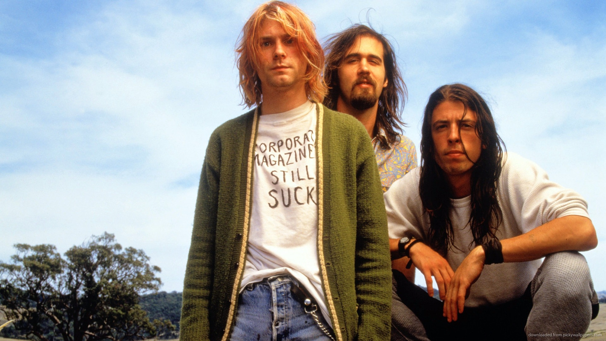
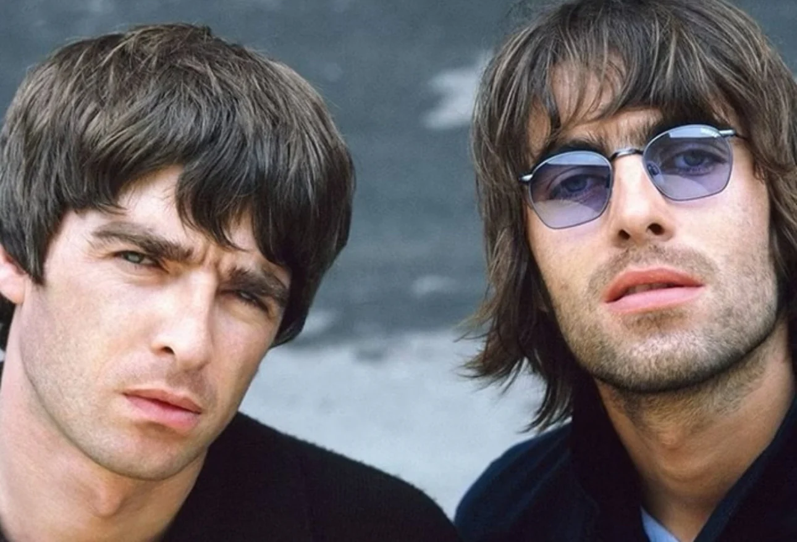

Historia do Rock and Rolll
Rock and roll nos anos 90
O rock dos anos 90 foi uma década de grandes transformações e diversificação para o gênero. O movimento que dominou os anos 80, com o glam metal e o rock grandioso, foi substituído por novas sonoridades e estilos que refletiram as mudanças culturais e sociais da época. A década viu o surgimento de subgêneros revolucionários como o grunge, o britpop, o punk rock renovado, o alternativo e a fusão do rock com outros estilos musicais. O uso da MTV continuou a ser crucial, mas a Internet também começava a desempenhar um papel importante na forma como a música era distribuída e consumida.
O grunge foi, sem dúvida, o movimento mais marcante do rock nos anos 90, especialmente na primeira metade da década. Originado em Seattle, nos Estados Unidos, o grunge mesclava elementos do punk rock, do heavy metal e do hard rock, mas com uma sonoridade mais suja, pesada e introspectiva, marcada por distorções e letras melancólicas. O grunge foi uma reação ao rock excessivamente produzido dos anos 80 e se alinhava com a cultura do descontentamento juvenil e a alienação da sociedade. As maiores bandas do grunge são: Nirvana, Pearl Jam, Alice In Chains e Soundgarden.
Enquanto o grunge dominava os Estados Unidos, o britpop tomou conta do Reino Unido, sendo uma espécie de resposta britânica ao som alternativo americano. O britpop resgatou o estilo do rock clássico britânico, com influências dos Beatles, The Kinks e The Who, mas incorporou uma nova energia jovem e um certo sentimento de nacionalismo, retratando questões sociais e culturais do Reino Unido. Oasis e Blur são os principais nomes do estilo.
Embora o punk rock tenha começado nos anos 70, nos anos 90 ele passou por uma renovação, com o surgimento do pop punk, um estilo mais melódico, rápido e acessível. O pop punk era menos político e mais voltado para questões pessoais e sociais, muitas vezes com uma abordagem irreverente e de humor. Green Day e Offspring dominaram o pop punk nos anos 90.
Nos anos 90, o rock alternativo continuou a evoluir e se diversificar, com uma grande variedade de estilos sendo explorados por bandas que não se encaixavam perfeitamente em um único gênero. A ascensão de novas tecnologias de gravação e a liberdade criativa que elas proporcionaram ajudaram a gerar uma cena musical diversificada, onde o som experimental e a mistura de influências se tornaram a norma. O rock alternativo explodiu graças a nomes como: Radiohead, Smashing Pumpkins e o cantor Beck.